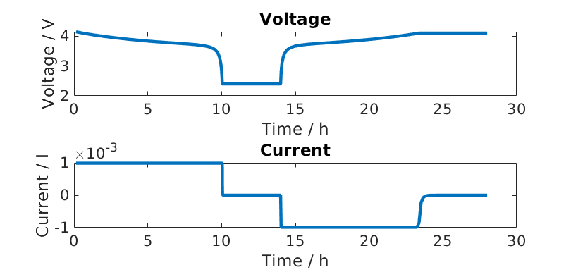

Composite Silicon Graphite electrode
Generated from runSiliconGraphiteBattery.m
Import the required modules from MRST
load MRST modules
mrstModule add ad-core matlab_bgl
Shortcuts
We define shorcuts for the sub-models.
ne = 'NegativeElectrode';
pe = 'PositiveElectrode';
co = 'Coating';
am1 = 'ActiveMaterial1';
am2 = 'ActiveMaterial2';
bd = 'Binder';
ad = 'ConductingAdditive';
sd = 'SolidDiffusion';
itf = 'Interface';
Setup the properties of the battery
We load the property of a composite silicon graphite electrode, see Composite electrode json input file
jsonstruct_composite_material = parseBattmoJson('ParameterData/BatteryCellParameters/LithiumIonBatteryCell/lithium_ion_battery_nmc_silicon_graphite.json');
For the remaining properties, we consider a standard data set
jsonstruct_cell = parseBattmoJson('ParameterData/BatteryCellParameters/LithiumIonBatteryCell/lithium_ion_battery_nmc_graphite.json');
We remove form the standard data set the ActiveMaterial field. This step is not necessary but is cleaner and we avoid a warning.
jsonstruct_cell.(ne).(co) = rmfield(jsonstruct_cell.(ne).(co), 'ActiveMaterial');
We merge the two json structures
jsonstruct = mergeJsonStructs({jsonstruct_composite_material, ...
jsonstruct_cell});
We do not consider the thermal model and remove the current collector
jsonstruct.use_thermal = false;
jsonstruct.include_current_collectors = false;
We instantiate the battery InputParams object
paramobj = BatteryInputParams(jsonstruct);
We set the mass fractions of the different material in the coating of the negative electrode. This information could have been passed in the json file earlier (Composite electrode json input file)
paramobj.(ne).(co).(am1).massFraction = 0.9;
paramobj.(ne).(co).(am2).massFraction = 0.08;
paramobj.(ne).(co).(bd).massFraction = 0.01;
paramobj.(ne).(co).(ad).massFraction = 0.01;
We change the given CRate
paramobj.Control.CRate = 0.1;
We validate the InputParams using the method validateInputParams which belongs to the parent class. This step
Paramobj = paramobj.validateInputParams();
gen = BatteryGenerator1D();
Now, we update the paramobj with the properties of the mesh.
paramobj = gen.updateBatteryInputParams(paramobj);
Model Instantiation
We instantiate the model
model = Battery(paramobj);
Setup schedule (control and time stepping)
We will simulate two consecutive periods: a discharge followed by a charge. We start with the charge period
CRate = model.Control.CRate;
total = 1.4*hour/CRate;
n = 100;
dt = total/n;
step = struct('val', dt*ones(n, 1), 'control', ones(n, 1));
tup = 0.1; % rampup value for the current function, see rampupSwitchControl
srcfunc = @(time, I, E) rampupSwitchControl(time, tup, I, E, ...
model.Control.Imax, ...
model.Control.lowerCutoffVoltage);
control = struct('src', srcfunc, 'IEswitch', true);
schedule = struct('control', control, 'step', step);
Setup the initial state of the model
We use the default initialisation given by a method in the model
initstate = model.setupInitialState();
Setup the properties of the nonlinear solver
We adjust some settings for the nonlinear solver
nls = NonLinearSolver();
Change default maximum iteration number in nonlinear solver
nls.maxIterations = 10;
Change default behavior of nonlinear solver, in case of error
nls.errorOnFailure = false;
We use a time step selector based on relative change of a target value, in our case the output voltage
nls.timeStepSelector=StateChangeTimeStepSelector('TargetProps', {{'Control','E'}}, 'targetChangeAbs', 0.03);
We adjust the nonlinear tolerance
model.nonlinearTolerance = 1e-3*model.Control.Imax;
We use verbosity
model.verbose = true;
Run the simulation for the discharge
[wellSols, states, report] = simulateScheduleAD(initstate, model, schedule, 'OutputMinisteps', true, 'NonLinearSolver', nls);
dischargeStates = states;
Setup charge schedule
We use the last computed state of the discharge as the initial state for the charge period.
initstate = states{end};
We use a new control. Note the minus sign in front of model.Control.Imax
srcfunc = @(time, I, E) rampupSwitchControl(time, tup, I, E, ...
-model.Control.Imax, ...
model.Control.upperCutoffVoltage);
control = struct('src', srcfunc, 'IEswitch', true);
schedule = struct('control', control, 'step', step);
Run the simulation for the charge perios
[wellSols, states, report] = simulateScheduleAD(initstate, model, schedule, 'OutputMinisteps', true, 'NonLinearSolver', nls);
chargeStates = states;
Visualisation
We concatenate the states we have computed
allStates = vertcat(dischargeStates, chargeStates);
Some ploting setup
set(0, 'defaultlinelinewidth', 3);
set(0, 'DefaultAxesFontSize', 16);
set(0, 'defaulttextfontsize', 18);
We extract the voltage, current and time from the simulation output
E = cellfun(@(x) x.Control.E, allStates);
I = cellfun(@(x) x.Control.I, allStates);
time = cellfun(@(x) x.time, allStates);
figure
subplot(2, 1, 1);
plot(time/hour, E);
xlabel('Time / h');
ylabel('Voltage / V');
title('Voltage')
subplot(2, 1, 2);
plot(time/hour, I);
xlabel('Time / h');
ylabel('Current / I');
title('Current')

We compute and plot the state of charges in the different material
figure
hold on
for istate = 1 : numel(allStates)
allStates{istate} = model.evalVarName(allStates{istate}, {ne, co, 'SOC'});
end
SOC = cellfun(@(x) x.(ne).(co).SOC, allStates);
SOC1 = cellfun(@(x) x.(ne).(co).(am1).SOC, allStates);
SOC2 = cellfun(@(x) x.(ne).(co).(am2).SOC, allStates);
plot(time/hour, SOC, 'displayname', 'SOC - cumulated');
plot(time/hour, SOC1, 'displayname', 'SOC - Graphite');
plot(time/hour, SOC2, 'displayname', 'SOC - Silicon');
xlabel('Time / h');
ylabel('SOC / -');
title('SOCs')
legend show

complete source code can be found here